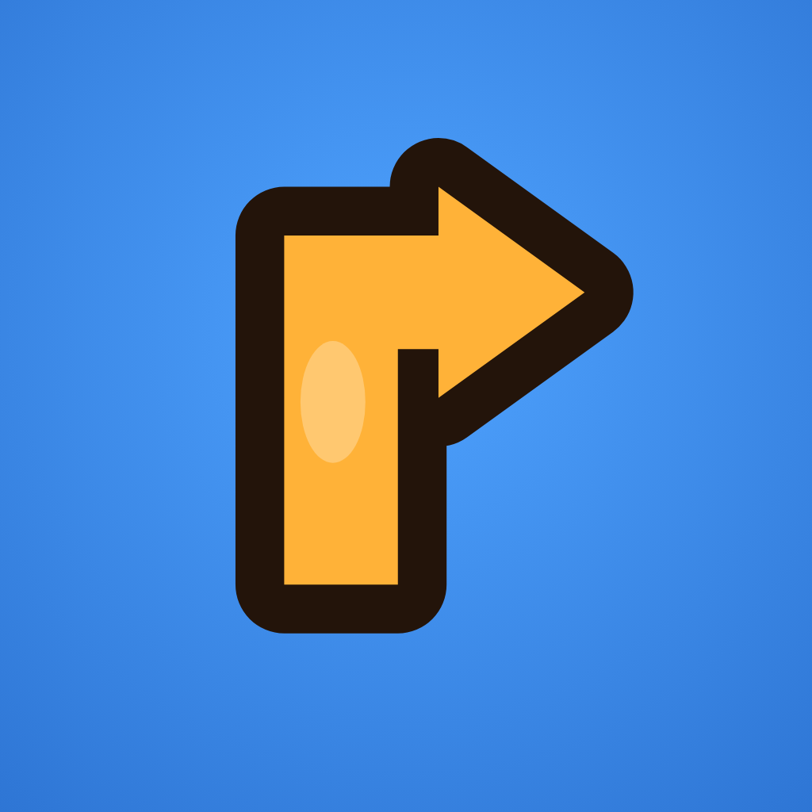

Arrow Path GO is een pijl-puzzelspel, ontwikkeld door MAR-Team. Vragen? Mail ons op smartapps.ev@gmail.com.
De app slaat het volgende alleen lokaal op (in de opslag van de app):
Deze gegevens worden niet naar ons of naar een server gestuurd. Er is op dit moment geen aparte "gegevens wissen"-knop in de app; alle lokaal opgeslagen gegevens verdwijnen wanneer je de app verwijdert.
Arrow Path GO toont op dit moment geen advertenties. Als we in een toekomstige versie advertenties toevoegen, gebeurt dat via Google AdMob. Google kan daarbij gegevens verwerken zoals een advertentie-identificatie, algemene locatie (op basis van IP), apparaatgegevens en interacties met advertenties. Lees hoe Google gegevens gebruikt: Google – Hoe Google gegevens gebruikt en het privacybeleid van Google. In de Europese Economische Ruimte vragen we waar nodig je toestemming voordat advertenties actief worden.
De app is niet specifiek gericht op kinderen. We verzamelen niet bewust gegevens van kinderen.
Omdat je gegevens lokaal op je toestel blijven, heb je er zelf volledige controle over: verwijder de app om alle gegevens te wissen. We kunnen dit privacybeleid bijwerken als de app verandert; de datum bovenaan toont de laatste wijziging. Vragen? Mail smartapps.ev@gmail.com.
Arrow Path GO is an arrow puzzle game by MAR-Team. Questions? Email smartapps.ev@gmail.com.
The app stores the following locally only: which levels you unlocked and solved, with stars and best time per level; your daily play streak and remaining hints; and your settings (language, theme, sound, haptics). This data is never sent to us or to a server. There is currently no separate "clear data" button in the app; all locally stored data is removed when you uninstall the app.
Arrow Path GO currently shows no ads. If we add ads in a future version, this will be done through Google AdMob. Google may then process data such as an advertising identifier, coarse location (from IP), device information and ad interactions. See how Google uses data and the Google Privacy Policy. In the European Economic Area we will ask for your consent where required before ads become active.
The app is not specifically directed at children. We do not knowingly collect data from children.
Because your data stays on your device, you are fully in control — uninstall the app to erase all data. We may update this policy as the app changes; the date at the top reflects the latest change. Contact: smartapps.ev@gmail.com.